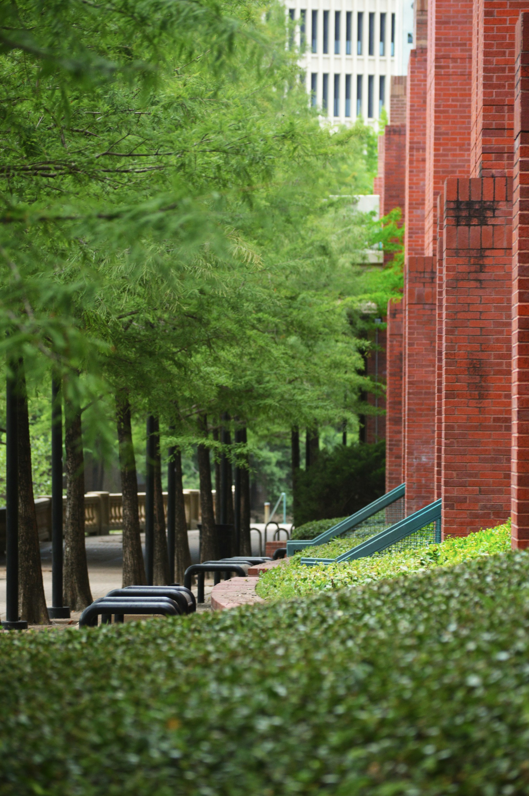

Attractions in Houston
Space Center Houston

Photo by Abdullah Guc on Unsplash
The Houston Space Center is a science museum in Houston. The Organization is owned by NASA. The Houston Space Center was designed by a Smithsonian Affiliate museum in 2014.
Houston Museum of Natural Science

Photo by Ousa Chea on Unsplash
BThe Houston Museum of Natural Science is located at the border of Herman Park in Houston. It was established in 1909 by the Houston Museum and Scientific Society.
Buffalo Bayou Park
Photo by Alex Moliski on Unsplash
Buffalo Bayou Park is a 2.3 mile (3.7 km) long urban park located next to the banks of the Buffalo Bayou. The park was opened in 2015 and offers a variety of activities like a skate park, picnic area and a dog park.